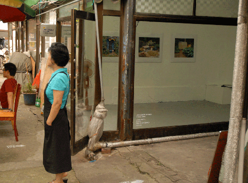
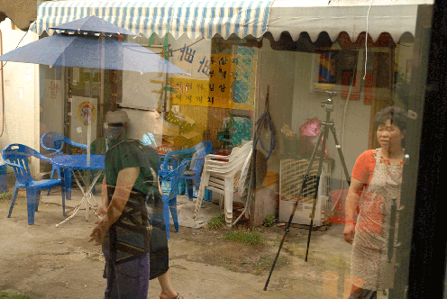
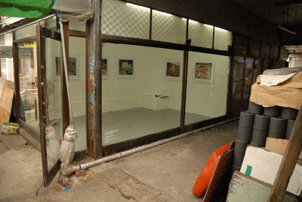
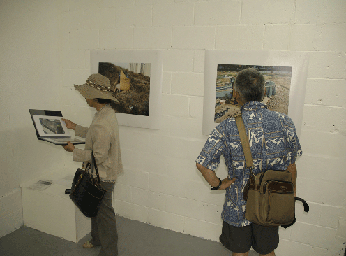
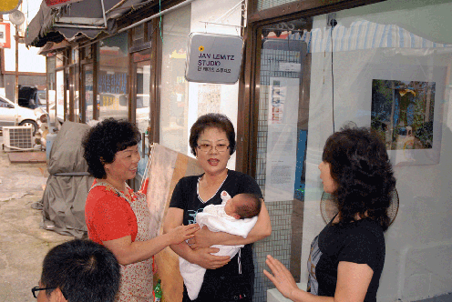
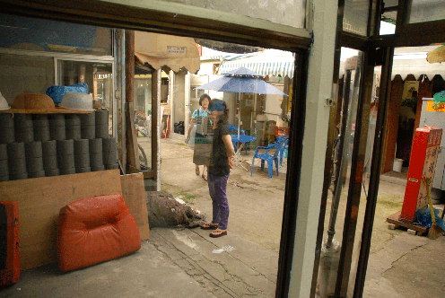
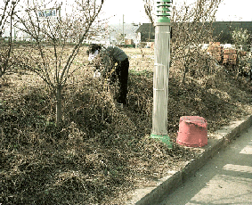
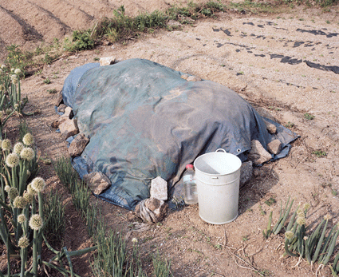

Field of supply
Seoksu is a rather peripheral part of a vast urban construct that is undergoing dramatic changes and keeps growing at breathless pace. From a local perspective Seoksu Market is a microcosm essential for the vitality of the local community. Vibrant and in bright display the market and its resources seem to be the very contrast of modernization, a subversive spectacle, exposed to the perils of redevelopment.
In this project I am interested in market related phenomena that do not show and remain invisible locally. I want to focus on the many sites of agrarian production that are a common feature of the urban landscape of the wider Seoul region. The vacant lots on the edge of neighborhoods, next to highways or suburban train lines are home to traditional ways of small scale farming or gardening. As horizontally organized urban and social space these sites have a somewhat symbolic connotation in the mean time they are market resistant and unaffected as they merely need to meet personal needs or those of hand-to-mouth entrepreneurism.
At first glance improvised, the self-made makeshifts have an aesthetic value in their own right, The little huts and shacks make for transient constellations, beautiful in a subtle way. Part of an informal economy their existence follows the cycles of urban growth, often enough battleground for conflicts resulting from the different degrees of development within Korean society.
These photographs will be exposed in a small shop on Seoksu market during the open studio days at the end of the residency. As part of a documentary project this intervention aims at connecting the market with apparently disassociated issues and contexts.
공급의 장場
극적인 변화를 겪으며 숨가쁜 속도로 성장해가는 거대한 도시의 구조 속에서 석수동은 다소 주변적인 곳이며, 지역적 관점에서 석수시장은 지역커뮤니티의 활력을 위해 매우 중요한 소우주이다. 시장은 매우 활기차고 생동감있게 보이지만, 그 원천은 현대화와 매우 대조적인 듯하며 재개발의 위험에 노출되어 있는 불안정한 광경이다.
이번 프로젝트에서 나는 눈에 드러나지 않고 보이지는 않지만 시장과 관계가 있는 현상들을 다룬다. 특히 광범위한 서울 주변 지역의 도시 풍경 속에서 일반적으로 만날 수 있는 농업 생산이 이루어지고 있는 다수의 장소에 포커스를 두고자 한다. 고속도로 혹은 도시 근교 기차길 주변에 위치한 동네 어귀는 유휴 공간으로 소규모의 경작이나 원예의 전통적 방식으로 농사를 짓는데 장소를 제공한다. 수평적으로 조직화된 도시적, 사회적 공간으로 이러한 장소들은 고도의 수직 상승에 반대되는 어떤 상징적인 의미를 가진다. 이 장소들은 공식적인 공급 사슬에 속하지 않으므로 시장으로부터도 제외되어 있다. 동시에 이들은 단지 개인적인 요구나 그날 벌어 그날 먹는 소규모 상인의 요구에 부합하기 때문에 시장에 대해 저항력이 있고 시장에 영향을 받지 않는다.
언뜻보기에 즉흥적이고, 임시적으로 만들어진 이런 구조들은 그것만의 고유한 미적가치를 지니며, 이렇게 일시적으로 배치된 작은 오두막과 판잣집 형태의 구조물은 미묘하게 아름답기까지 하다. 비공식적인 경제의 일부로 이들은 도시 성장의 주기를 따르며, 종종 한국사회의 다양한 성장의 면모로부터 초래되는 갈등의 현장이 되기에 충분하다.
이 사진들은 레지던시가 끝날 무렵 오픈 스튜디오 기간 동안 석수시장에 위치한 작은 점포에서 보여질 것이다. 다큐멘터리 프로젝트의 일환으로 이번 작업은 외관상으로는 무관한 이슈와 맥락들을 시장과 관계 맺도록 하는 것에 그 목적이 있다.
seoksuartproject.blogspot.com 에서 옮김
first open studio day
     
2009-08-09
sap2009.egloos.com 에서 옮김
jan lemitz's field of supply

In this project I am interested in market related phenomena that do not show locally. I want to focus on the many sites of agrarian produc- tion that are a common feature of the urban landscape of the wider Seoul region. The vacant lots on the edge of neighbourhoods, next to highways or suburban train lines are home to traditional ways of small scale farming or gardening. As hori- zontally organised urban and social space these sites are excluded from the market as they are not part of the official supply chains. As fields of supply they meet personal needs or those of hand-to-mouth entrepre-neurism only and thereby resist the market.

2009-07-20
sap2009.egloos.com 에서 옮김